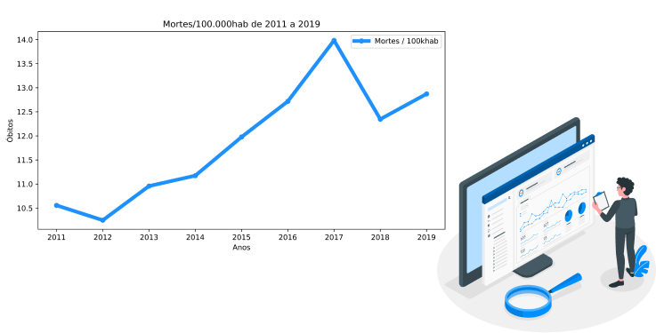
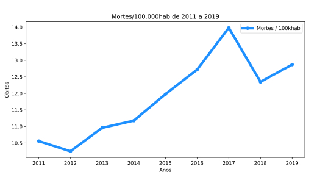

Segundo dados do DATASUS e IBGE, a taxa de óbitos por câncer de pênis, testículo e prostata vem aumentando nos ultimos anos no Maranhão.


Esse é o principal lema da Blue Wand ("Varinha Azul", para os íntimos). Mas por que uma comunidade maranhense voltada à saúde genital masculina?
A Blue Wand é um grupo 100% maranhense de apoio a homens acometidos por câncer de pênis. Nosso objetivo é combater a desinformação, incentivar a prevenção e o tratamento para esta doença.